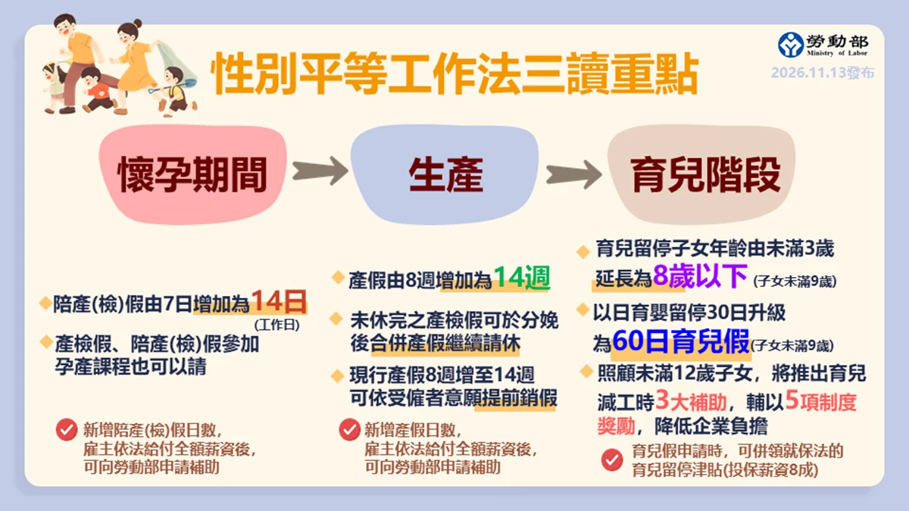

立法院三讀通過《性別平等工作法》和《就業保險法》修正案。這兩部法案還要送總統公布，施行日期由行政院另定，所以現在是「通過了、還沒開始施行」，實際施行日期請以公布為準。

勞動部整理的「五大突破」：
- 產假和陪產假延長：產假由 8 週增加為 14 週；陪產檢及陪產假由 7 日增加為 14 日（工作日）；懷孕三個月以下流產的假期天數也增加。未休完的產檢假，可以在產假結束後接著請休。
- 育兒留職停薪放寬：子女年齡由「未滿 3 歲」放寬為「8 歲以下（滿 9 歲前）」，申請期間以 2 年為限。
- 育嬰留停升級為 60 日育兒假：現行以日計算的 30 日，升級為 60 日育兒假，子女同樣是 8 歲以下。子女生病、停托、停課、預防接種，或參加托育、學校的親職活動，都可以請。
- 育兒津貼「6+3」（就業保險法）：雙親各領滿 6 個月後，再各多領 3 個月，每人最長 9 個月，雙親合計最長 18 個月。
- 企業托育租稅優惠：企業辦理托兒設施或托兒措施，支出金額的 200% 可以從當年度所得額中減除。
雇主補貼：新增的產假日數（第 9 至 14 週）、陪產檢及陪產假第 8 至 14 日，雇主依法給付全額薪資後，可以向勞動部申請補助。產假第 9 至 14 週，勞工也可以依自己的意願提前銷假回到職場。
就業保險法的其他修正：
- 刪除就保投保年齡 65 歲的上限，支持中高齡與高齡者就業。
- 失業給付的等待期，由 14 日縮短為 7 日。
- 提早就業獎助津貼，由未領失業給付金額的 50% 提高為 60%。
資料來源：勞動部。原公告網址：https://www.mol.gov.tw/1607/1632/1633/100107/post